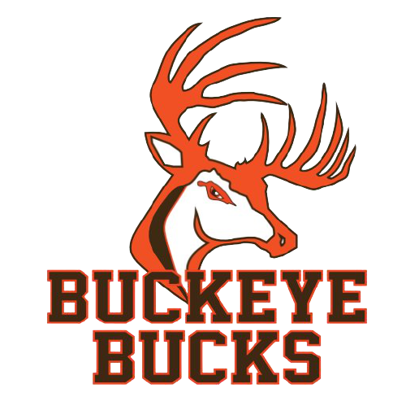

Summary
Senior at Kent State University pursuing a degree in Computer Science. Plans to enter the workforce as a software developer. Past work experience includes experience in DevOps, cloud engineering, help desk support, device repair, scripting, system administration, and application development. I am currently interested in positions to increase my skills and gain experience as a software developer.
Skills
|
|
Education
Kent State UniversityComputer Science Honors College Student Aug 2021 - Dec 2024 |
|
Medina County Career CenterSoftware Engineering & Web Development 2019 - 2021 |
|
|  |
Buckeye High SchoolDiploma 2017 - 2021 |
Work Experience
Lead IT TechnicianKent State University January 2022 - January 2024
|
|
Cloud Platform Engineering InternHyland Software May 2023 - August 2023
|
|
IT Service Desk & Operations InternMTD Products May 2022 - August 2022
|
|
Desktop TechnicianMedina County Career Center June 2020 - August 2021
|